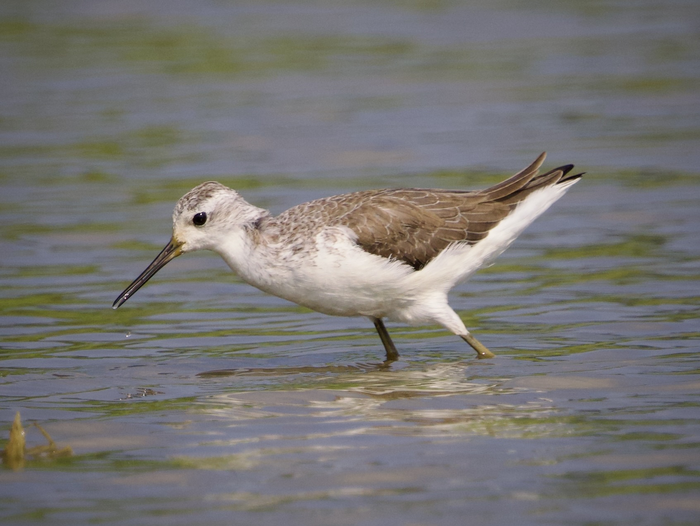

Marsh Sandpiper
Tringa stagnatilis
Order: Charadriiformes
Family: Scolopacidae

A delicate-looking wader. Has a needle-thin black bill and long yellowish legs. Crown and neck are faint brownish grey, while back and wings are darker with pale fringes. Easily dismissed as Greenshank; note Greenshank is stockier and chunkier, while Marsh Sandpiper looks as though it would snap like a twig.